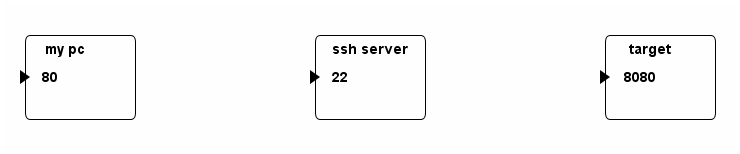
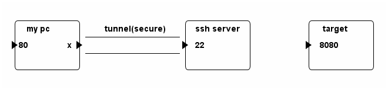
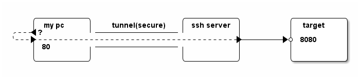
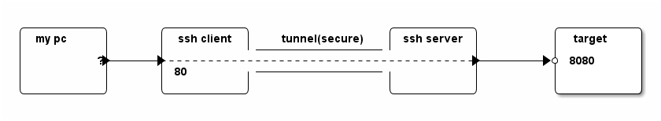
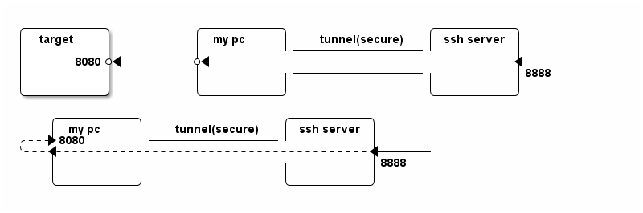
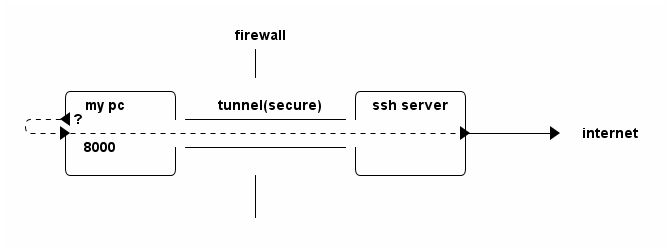

Understanding SSH Port Forwarding
Port forwarding (tunneling), especially the local port forwarding, is a very handy feature of SSH. This blog explains local port forwarding in detail first. After that, this blog then introduces remote port forwarding and dynamic port forwarding briefly.
How local port forwarding works
Before getting started, let us assume we have the following three hosts and want to forward all traffics to port 80 of my pc to the port 8080 of target host.

This is a case which SSH local port forwarding applies. The command to set the tunnel is:
ssh ssh_server -L 80:target:8080
This command set up a SSH connection between my PC and the SSH server. This connection, in addition to working as usual, also acts a tunnel.

When traffics arrive at port 80 of my pc, they will then go through the tunnel.

Jump three hops
Note that in fact a traffic can be originated from a forth machine. That is, you can "jump 3 hops" with a single SSH tunnel.

According to man page, the listening port will, by default, be bond to the loop back interface only. To forward traffics from other machines, one must
- Set
GatewayPortsin/etc/ssh/sshd_configto "yes". - Specify bind address. For instance (empty or * for any), on ssh client run
the following command:
ssh -L :80:ssh_server:8080 target
But according to my test,
- GatewayPorts does not take effect.
- Remote port forward bind to all interface by default.
Option '-N'
Do not execute a remote command. This is useful for just forwarding ports (protocol version 2 only).
Remote Port Forwarding
As the name indicates, remote port forwarding is the reverse of local port forwarding. This time, the traffic arrives at the "remote" side will be forwarded to the host on local side.
ssh ssh_server -R :8888:target:8080 ssh ssh_server -R :8888:localhost:8080

Dynamic Port Forwarding
Yet another kind of port forwarding turns your local machine to a socket proxy. For instance, assume that your local machine locates behind firewall and all outgoing HTTP requests are filtered by the firewall. A way to circumvent this restriction is to set up an ssh server outside the firewall and employ the dynamic port forwarding technique.
- Run the following command to set up ssh tunnel.
ssh ssh_server -D 8000
- Then, in web browser, set proxy as "SOCKS Host"
localhost:8000.
Exercise: study the following picture and compare dynamic port forwarding with local port forwarding.
